Horokanai
Horokanai · Hokkaido
Horokanai
Highlighted on the Hokkaido map.
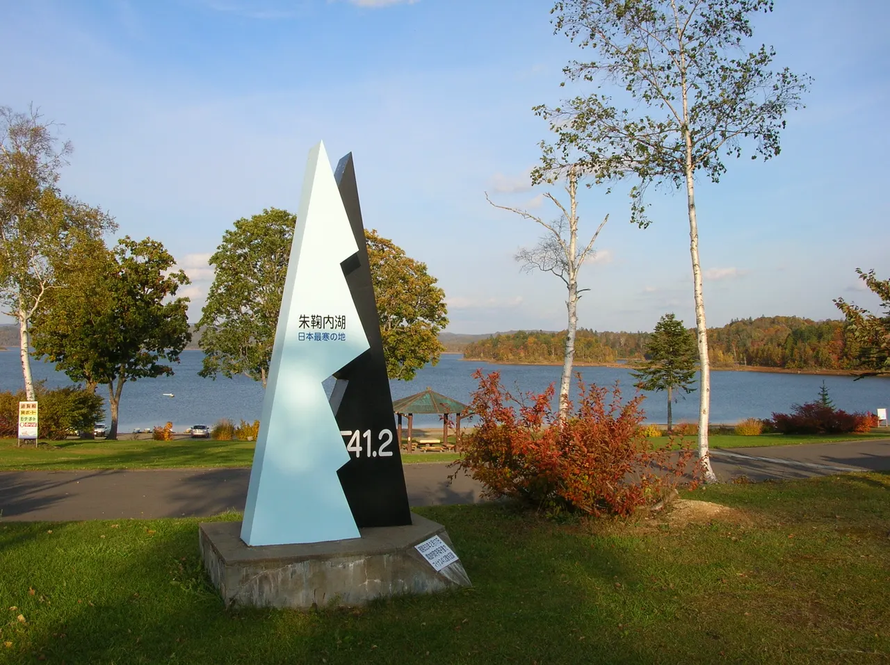
Stay
手打ち蕎麦の宿 朱鞠内湖そばの花
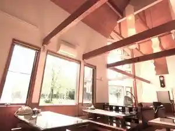
Teuchi Chi Soba No Yado Shu Mari Naiko Sobano Hana
レークハウスしゅまりない
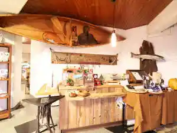
Reekuhausu Shumarinai
朱鞠内湖畔キャンプ場ログキャビン
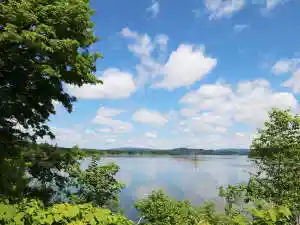
Shu Mari Naiko Aze Kyanpu Ba Rogukyabin
Dining
そばごう
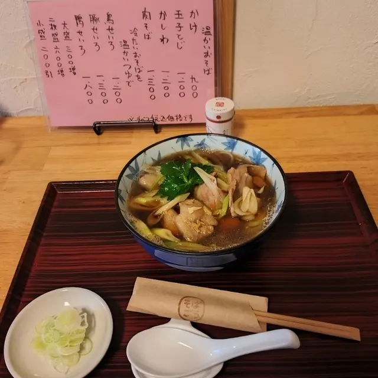
Sobagou
レークハウスしゅまりない
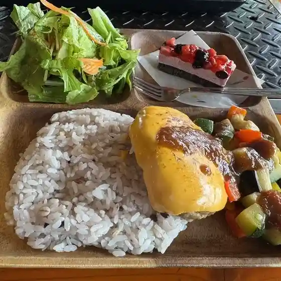
Reekuhausu Shumarinai
朱鞠内湖そばの花
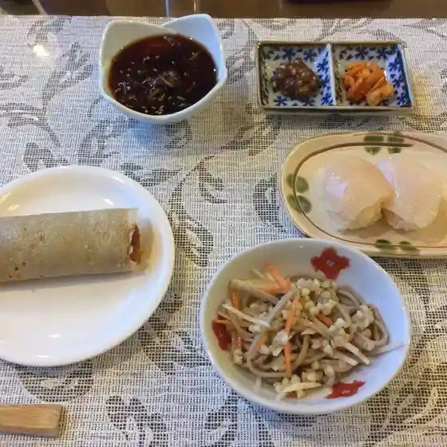
Shu Mari Naiko Sobano Hana
八右ヱ門
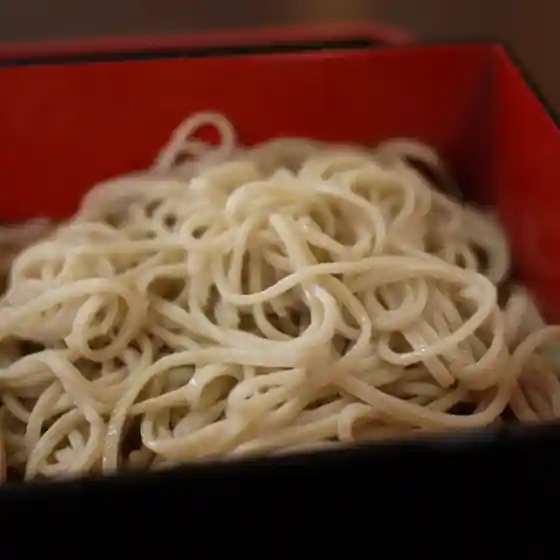
Hachi Migi E Mon
森salon
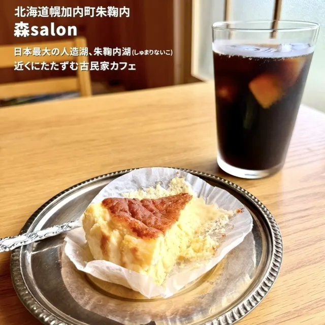
Mori Salon
ほろたち山荘
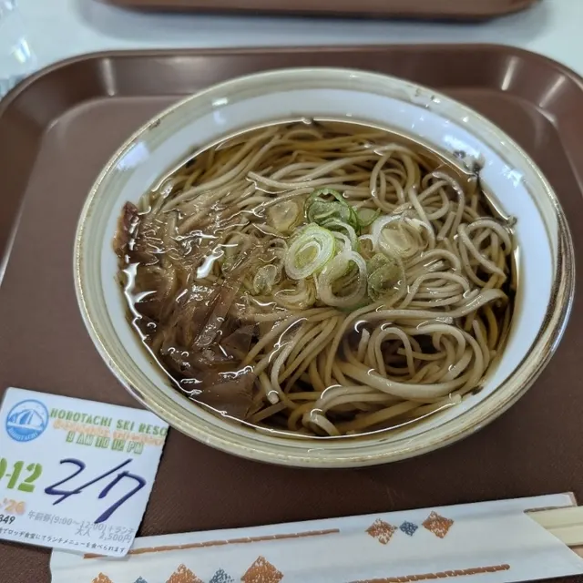
Horotachi Sansou
あじよし食堂
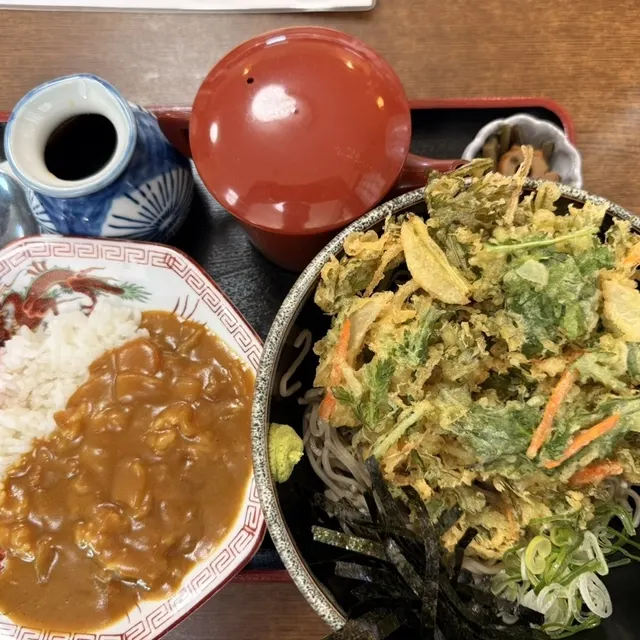
Ajiyoshi Shokudou
エーコープ 幌加内店

Eekoopu Horokanai Mise
吉野屋旅館
Yoshinoya Ryokan
まどか
Madoka
蕎麦ダイニングそばの里
Soba Dainingu Sobano Sato
霧立亭
Kiri Ritsu Tei
幌加内せいわ温泉ルオント
Horokanai Seiwa Onsen Ruonto
道の駅 森と湖の里ほろかない
Michi No Eki Mori To Mizuumi No Sato Horokanai
湖畔亭
Kohan Tei
幌加内そば 雪月花
Horokanai Soba Yuki Gekka
コンカフェ 母子里
Konkafe Boshi Sato
そばの坂本
Sobano Sakamoto